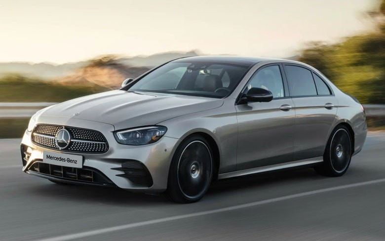

Что лучше: Mercedes, BMW или Audi?
Стоит только задать этот вопрос в приличном обществе автомобилистов, как разгорается жаркий спор, грозящий перерасти в драку. Тем не менее попробуем без предвзятости и претензий, взвешенно и хладнокровно порассуждать: что лучше — Мерседес, или БМВ, или Ауди?
Выбор между Audi, BMW и Mercedes-Benz зависит от ваших личных предпочтений, нужд и ожиданий от автомобиля. Все три бренда из Германии имеют долгую историю и славятся премиальными автомобилями, но каждый из них предлагает что-то уникальное. Корни этой уникальности стоит искать в богатом прошлом каждого бренда.
1. Краткая история Ауди, БМВ и Мерседес
Рассмотрим, как создавался каждый из брендов.
История автомобилей берет начало в конце XIX века с изобретения первых бензиновых двигателей. Одной из ключевых вех стало изобретение Карла Бенца, который в 1886 году представил Benz Patent-Motorwagen — первый автомобиль с двигателем внутреннего сгорания. В это же время активно работали и другие изобретатели, такие как Готтлиб Даймлер и Вильгельм Майбах, которые внесли значительный вклад в создание первых транспортных средств. Эти инновации стали фундаментом для будущего автомобильной промышленности.
История Audi
Этот бренд не сразу назвался Audi. Сначала был Horch, названный в честь основателя Августа Хорьха. Компания прославилась передовыми и роскошными автомобилями, но из-за внутренних дрязг отец-основатель был вынужден покинуть им же созданную компанию. Хорьх пошел на второй круг, так появился еще один автопроизводитель — Audi.
С течением времени компания вошла в альянс с другими германскими производителями: DKW, Horch и Wanderer. Получился Auto Union, логотипом которого стали четыре кольца, символизирующие объединение четырех марок. Заветы Августа Хорьха (инновации, роскошь) компания пронесла не просто через года — эпохи, и до сих пор славится техническими инновациями (полный привод quattro) и дизайном.
История BMW
Баварская BMW начинала как производитель авиационных двигателей, но в итоге прогремела на весь мир спортивными автомобилями и мотоциклами. Да что там: сегодня BMW — синоним спортивных автомобилей. Акцент производитель делает на следующие моменты:
- — управляемость
- — динамику
- — удовольствие от вождения
История Mercedes-Benz
Мерседес — полная противоположность БМВ. Это один из старейших автопроизводителей, который ценится во всем мире за следующие качества:
- — комфорт
- — плавность
- — стать
- — богатое убранство своих автомобилей.
Сегодня модельные линейки большой немецкой тройки обширны и богаты. Во-первых, там нашлось место относительно доступным массовым моделям:
- — BMW 3 серии
- — Audi A3
- — Мерседес С-класса.
Но среди моделей бренда есть и эксклюзивные роскошные авто. Такое разнообразие делает невозможным дать однозначный ответ: БМВ или Мерседес? Ауди или БМВ? Давайте тезисно выделим сильные и слабые стороны каждого бренда, а вы уж дальше как-нибудь сами решите: что ближе лично вам, и что лучше: Ауди или Мерседес, а быть может и БМВ.
2. Особенности Audi: плюсы и минусы
Audi известна своими высококачественными материалами и передовыми технологиями в интерьере. Особенно, если мы говорим про пакеты отделки S-Line:
- — глубокие спортивные кресла с развитой поддержкой
- — гоночные акценты в отделке (вставки из алюминия и карбона) сильно улучшают восприятие их моделей, давая владельцу почувствовать свою уникальность.
Не отстает от внутреннего убранства и технологическое наполнение. Audi часто внедряет инновационные технологии вроде широкого использования легких материалов (алюминий, композиты) в конструкции. Уместно вспомнить и виртуальную приборную панель Audi Virtual Cockpit: это сегодня виртуальная приборка есть в любом бюджетном китайском седане, но в середине нулевых таким могли похвастаться разве что топ-модели Audi или Range Rover.
Никуда не делась и фирменная система полного привода Quattro: Audi были одними из пионеров в деле внедрения систем 4х4 в легковушках, и до сих пор держат марку.
Из минусов — только дороговизна обслуживания и ремонта. И совсем уж вкусовщина — управляемость, которая здесь очень нейтральная и спокойная. При очном сравнении автомобили Audi неизбежно покажутся менее спортивными по сравнению с BMW.
3. Особенности BMW: плюсы и минусы
BMW делает акцент на радость вождения, поэтому их автомобили традиционно обладают отличной управляемостью и динамическими характеристиками.
Но хватает и хрестоматийных недостатков.
- — сниженный уровень комфорта — это словосочетание в одном предложении с BMW вообще неуместно
- — стоимость владения, которая порой баснословна даже на фоне других недешевых автомобилей
- — плата за инновации — конструкция BMW переусложнена спорными решениями, из-за чего владельцам со временем приходится натурально жить в сервисе и знать в лицо всех спецов: подвесочника, двигателиста и прочих.
Модели BMW последних десятилетий заслужили репутацию автомобилей, ненапряжных для владельца первого, но очень проблемных для владельца со второго и последующих.
В общем, BMW желательно брать новым. Или не брать. Как повезет — иногда и после двух рачительных хозяев баварца можно стать счастливым владельцем целого авто. Главное — проверить авто, которое покупаете, узнать всю его историю.
Из минусов — только дороговизна обслуживания и ремонта. И совсем уж вкусовщина — управляемость, которая здесь очень нейтральная и спокойная. При очном сравнении автомобили Audi неизбежно покажутся менее спортивными по сравнению с BMW.
4. Особенности Mercedes-Benz: плюсы и минусы
Мерседес, как мы говорили выше, это про:
- — комфорт и роскошь
- — Cтатус
- — эксклюзивность.
Все модели Mercedes-Benz за редким исключением акцентируются на мягкой и плавной езде. Недаром именно их продукцию предпочитают первые лица на всей планете — от министров до президентов. Эти персоны точно знают: Mercedes-Benz — залог тишины, плавности и безопасности.
Плата за это — куда менее спортивные и драйвовые ощущения для водителя. Управляемость Мерседесов не впечатляет не то, что на фоне BMW, но даже на фоне Audi.
5. Как сделать выбор между БМВ, Ауди и Мерседес
Довольно просто, на самом деле, если знать сильные и слабые стороны каждого:
- — если ищете спортивную управляемость и удовольствие от вождения, BMW будет лучшим выбором
- — если цените комфорт, роскошь и передовые технологии безопасности, стоит рассмотреть Mercedes-Benz
- — если хотите точный и выверенный баланс между качеством сборки, инновационными технологиями и хорошим полным приводом, Audi может стать идеальным выбором.
Но окончательное решение стоит принимать только после личного знакомства и вдумчивого изучения многотомников отзывов.